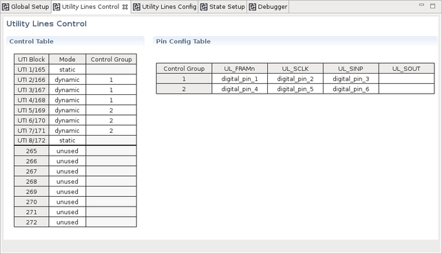

Routing Tools - Utility Lines Control editor
The Utility Lines Control editor of the Routing Tools enables you selecting static or sequencer‑controlled utility lines and defining the digital control pins for the sequencer‑controlled utility lines.

The Utility Lines Control editor provides the Control Table and the Pin Config Table.
Control Table
The Control Table shows all installed utility pogo blocks and defines the control mode of the utility lines per utility block.
For V93000 EXA Scale systems, the new five‑digit format and the legacy three‑digit format of the utility pogo block identifiers is displayed for the first group of eight pogo blocks. The screen shot above shows also eight more pogo blocks for a second optional Utility Card.
Mode defines the control mode for the utility pogo blocks. Content Assist will show the valid options in a drop-down list if you press Control + Space. The valid options are defined as follows:
- static: The utility lines are controlled only by
software.Note SmartRDI will control a utility block in code‑based mode if the static control mode has been selected. This will increase the test time and add more variance to the overall timing of a test suite.
- dynamic: The utility lines are controlled by the pattern sequencer. The Control Group must be selected and the required digital pins must be defined in the Pin Config Table. The serial interface for sequencer‑controlled utility lines must be wired on the DUT board for each utility block that is set to this control mode. For more information refer to Serial interface for sequencer-controlled utility lines.
- unused: The utility block is not used. SmartRDI will not consider unused utility blocks when creating the pattern for utility lines. Pins belonging to unused utility blocks cannot be entered in the Routing Tools - Utility Lines Config editor.
Control Group selects a group of control pins for each utility block that is set to the dynamic control mode. A control group in this context means a group of digital pins controlling the serial interface of a utility pogo block. Some rules must be respected when assigning the utility blocks to control blocks:
- The utility blocks of one control group must be contiguous.
- The utility block with the lowest number becomes the master.
- The serial interface pins on the master must be connected to the digital pins that you will be using to supply the control signals.
- The corresponding pins on the slave utility blocks must be left floating on the DUT board.
- On V93000 EXA Scale systems running SmarTest 7 and equipped with more than one optional Utility Card, ganging utility blocks across Utility cards is not supported.
For more information refer to Serial interface for sequencer-controlled utility lines and Ganging utility blocks.
Pin Config Table
The digital control pins for each of the control groups are to be defined in this section. The control pins must already be defined in the Digital Pins editor. A control group contains the following signals:
- UL_FRAMn: Serial frame enable signal FRAMn
- UL_SCLK: Serial clock signal SCLK
- UL_SINP: Serial data in signal SINP
- UL_SOUT: Serial data out signal SOUT
Digital pins for the three signals FRAMn, SCLK, and SINP are mandatory for each of the control groups. The definition for signal UL_SOUT is optional. For more information refer to Serial interface for sequencer-controlled utility lines.
Control pins that are not available in the loaded pin configuration are highlighted light-yellow. Control pins that are in conflict with other control pins and can therefore not be used are highlighted red.
Functional changes
- Introduced in SmarTest 7.4.4